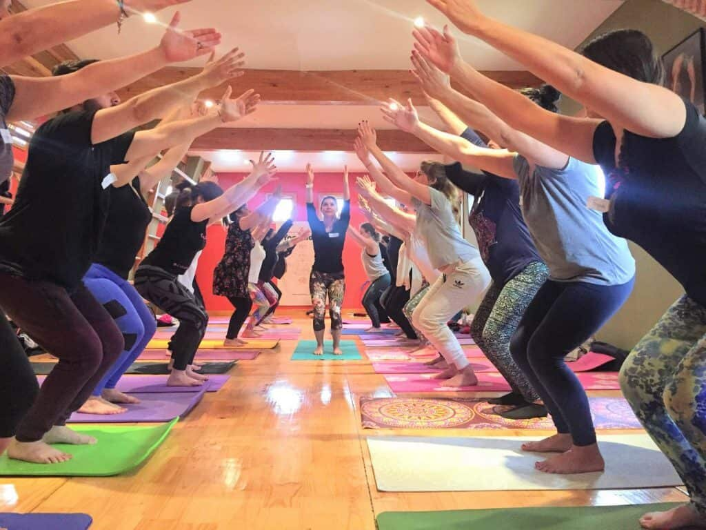
Este fin de semana reflexionamos nuevamente sobre la responsabilidad de nuestra labor con y para la infancia…
La importancia de cuidar nuestras acciones para que estas tengan trascendencia y sobre la necesidad de la convicción en ello.
Gracias a un bello grupo esto fue posible!
Agradecemos a cada una y en especial a Julián, quien se sumó a este viaje… Son pocos los que se atreven.
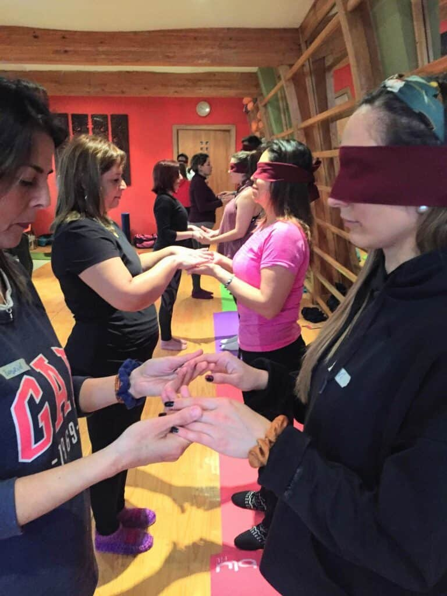
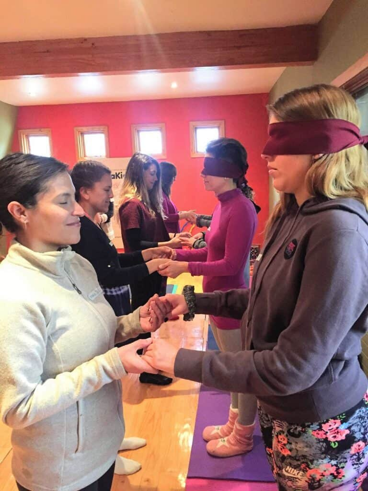
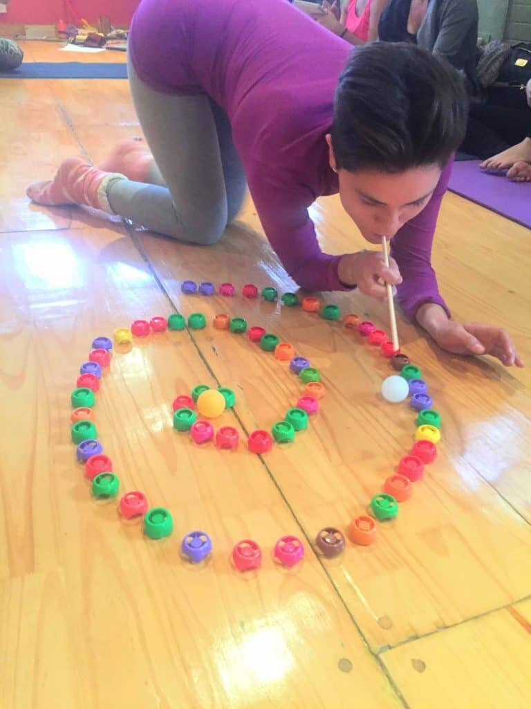
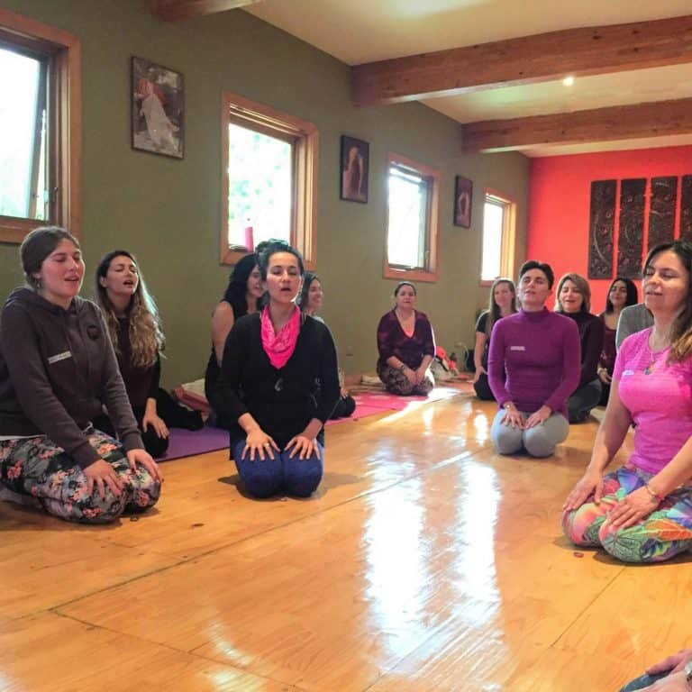
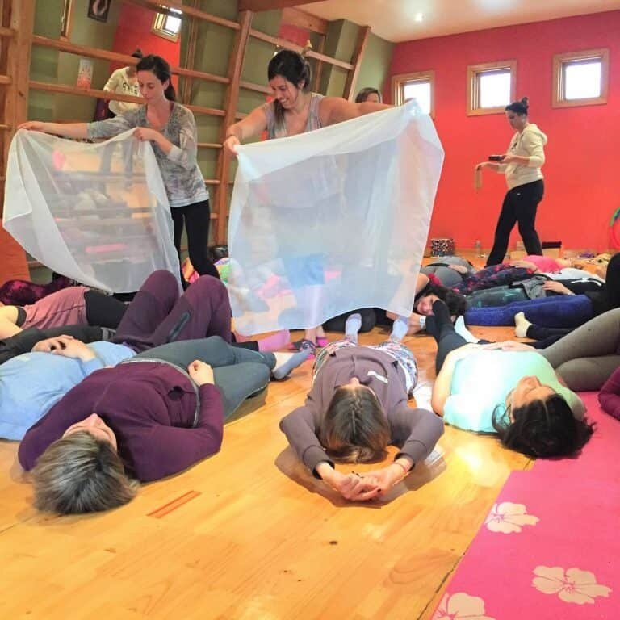
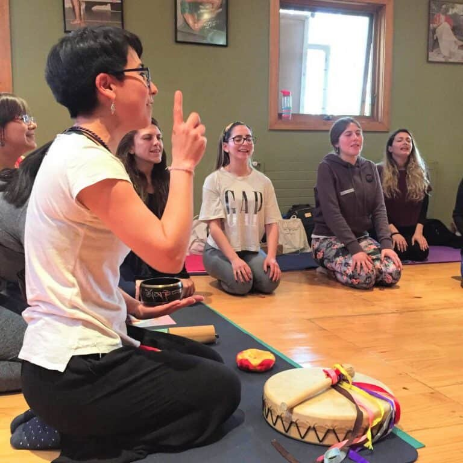
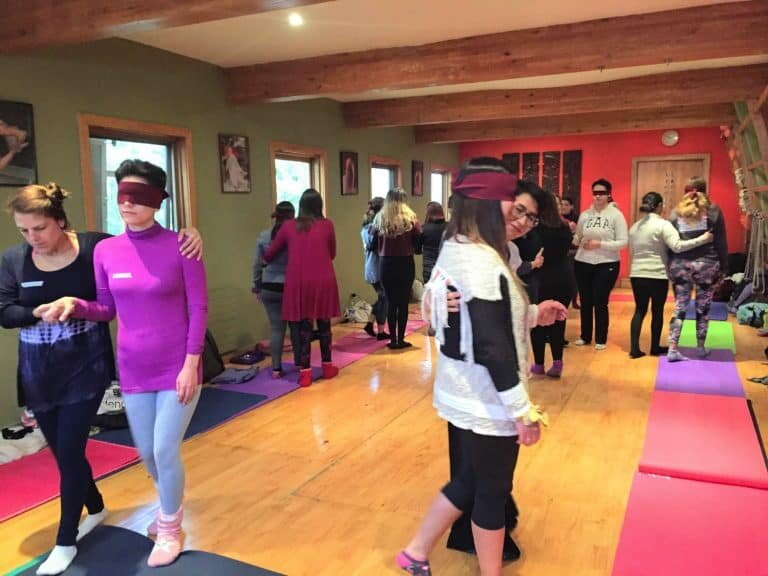
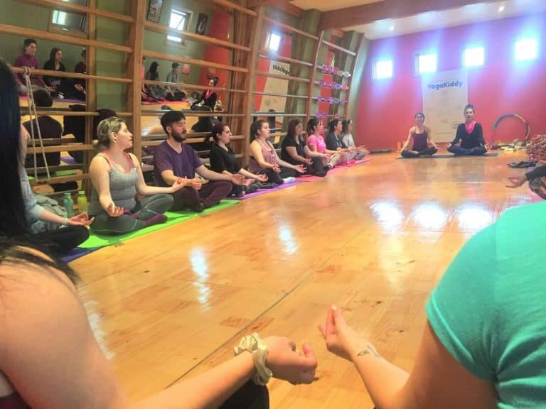
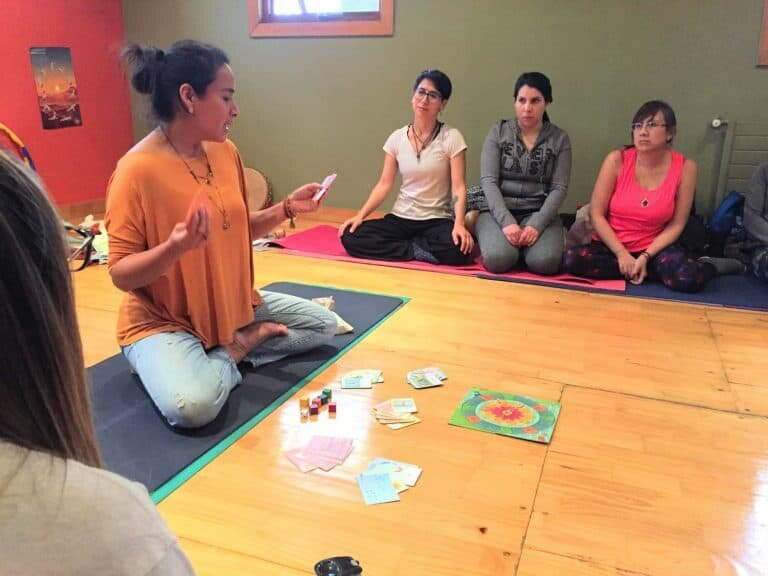
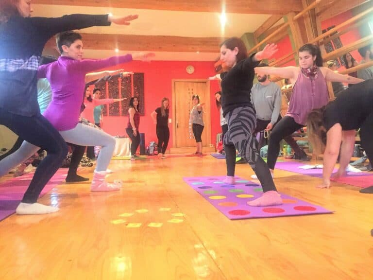
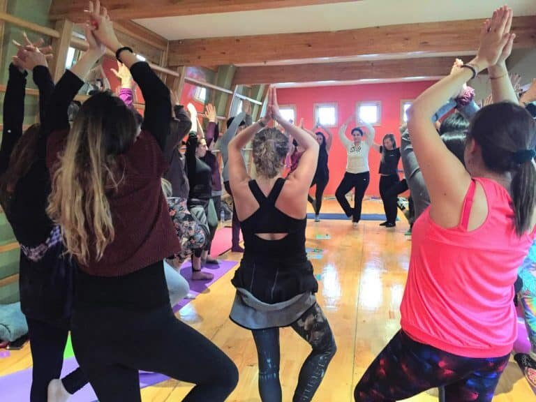
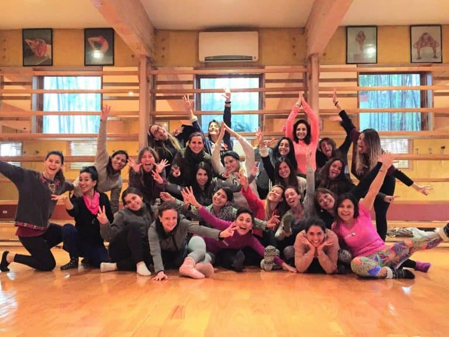
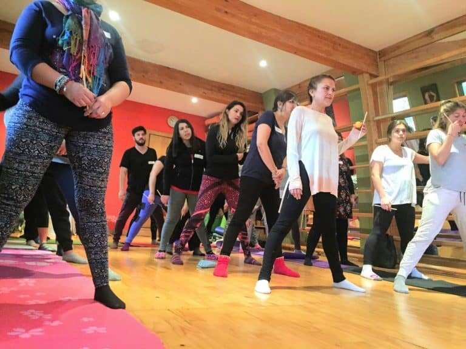
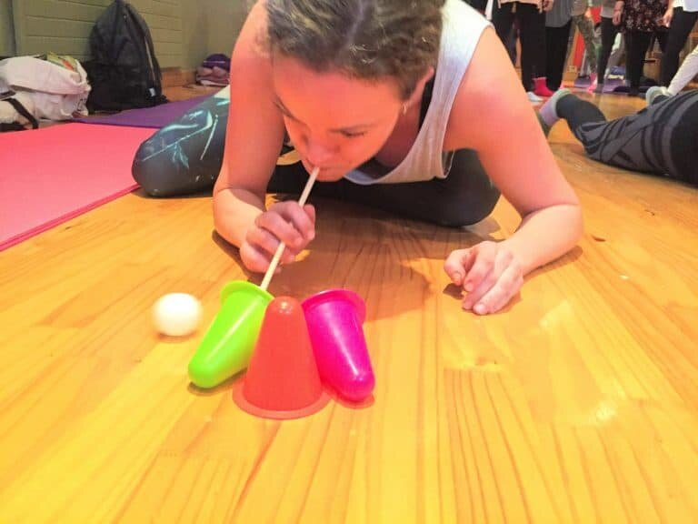